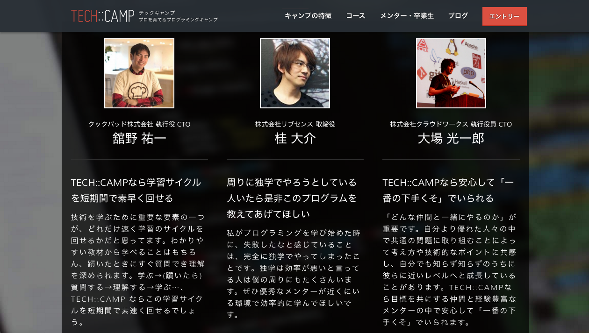

本章では、HTMLとCSSについて学びます。
HTMLとCSSは、Webページの「見た目」を作成するために利用する言語です。
こちらの章ではまずはじめに、HTML/CSSに関するイメージを掴んでいただきます。その後、本Lesson全体で学ぶ内容を確認します。
HTML/CSSのカリキュラムをリニューアルしたため、すでに学習をされた方はチェックボックスを全てチェックしなおす必要があります。以下の方法に従って、チェックボックスをチェック済みにしましょう。
1.全てチェック済みにしたいカリキュラムを開き、右クリック→ 「検証」を選択
2.以下の画面から「console」を選択
3.入力待機状態になるので、以下のコードをコピーして貼り付け、エンターキーを押して実行
1 |
$("input[type='checkbox']").trigger("click");
|
以上で、全てのチェックボックスを一度にチェック済みにできます。
まだ「要点チェックシート」が手元に無い方は、以下のリンクよりダウンロードしてください。HTML/CSSを学ぶ上でのポイントをわかりやすくまとめていますので、ご覧になりながらカリキュラムを進めていただきますとより理解が深まります。(Lesson1でダウンロードしていただいているものと同じ内容なので、すでにダウンロードされている場合、そちらを見つつ進めましょう)
これから、私達がインターネットで情報を得る際に見ているWebサイト、ページの見た目を作る方法を学びます。
私達は普段、google chromeやsafariといったインターネットブラウザという種類のアプリケーションを用いてインターネットに接続し、様々なWebサイトを閲覧していますね。
例えば、以下はWebページの１つであるTECH::CAMPのページです。

これは、実はHTMLという種類の言語が書かれたファイルが、視覚的に変換され表示されているのです。視覚的に変換するのは、主にCSSという言語の役割です。
Rubyの章に取り組まれた方は、◯◯.rbという名前のファイルを作成したと思います。同様に、拡張子を.html .cssのようにするだけでHTMLやCSSが記述されたファイルとして認識されます。
普段私達は、インターネットのどこかに設置されたHTMLファイルとCSSファイルによって作成された「見た目」を目にしているわけですね。
もう少しだけ詳しくみてみましょう。
では、WebページはHTML/CSSによってどのように構成されているのでしょうか。ここでポイントとなるのが、Webページの構成を全て「箱とテキスト」して捉えることです。以下の図を見てください。
箱もテキストも、すべてHTMLにより表現されます。HTMLで箱やテキストが存在していることを示し、箱の高さや横幅、背景色などをCSSで指定するイメージです。

CSSでは他にも、テキストのフォント変更や色、太字化や、箱と箱の間隔を決めたり、箱を横並びにしたりする指定などができます。
以上が本当に簡単なHTML/CSSに関する説明になります。これだけではまだ、Webページの見た目をどのように作れば良いかイメージできないでしょう。ここから先は、次回からの章で詳しく学びます。本Lessonでは今後、以下のようなことについて実践を通して学んでいきます。
・あるCSSをHTMLに適用する方法
・HTML/CSSファイルの設置場所
・HTML、CSSの文法
・自分の作成したHTML/CSSの様子をブラウザ上で確認する方法
本Lessonのゴールは「HTML/CSSを用いて自分の作成したい見た目を自由に作成できるようになること」です。
カリキュラムの流れとしては、最低限必要な知識を学んだ後、実際によくあるサイト構成を作成する課題をベースにHTML/CSSについて学べるようになっています。
本章です。HTML/CSSについての基礎知識とイメージを持ってもらい、またLessonの目的や各Lessonでの学習内容について把握します。
HTML/CSSの基本的な文法を学習します。HTMLで箱やテキストを表現する方法、CSSで特定の箱/テキストの装飾をする方法を学びます。
よくあるサイト構成を実際に作成しながら、最低限必要なhtml/CSSの要素を学びます。
3章のつづきです。
これまで学んできた知識を利用して、ブログページを1ページまるごとコーディングする課題に挑戦します。
お疲れ様でした！このカリキュラムの終わりに確認問題を解きましょう。
テストを受けた回数：1回
最高得点：100点
合否：合格
 大宅 誠人
大宅 誠人